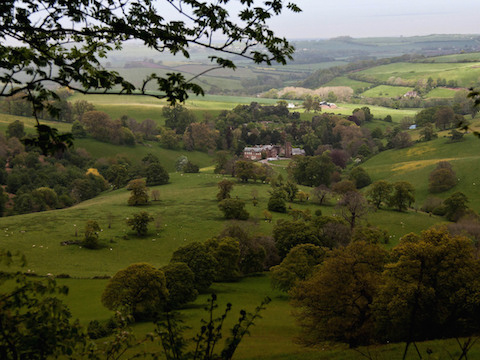
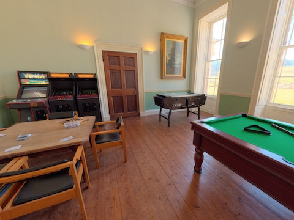
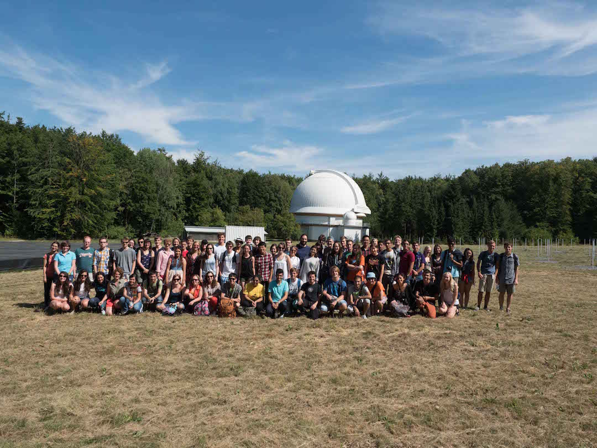
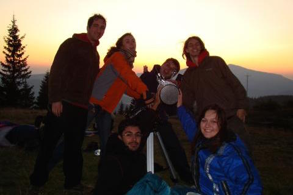
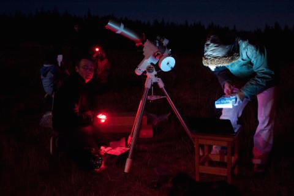
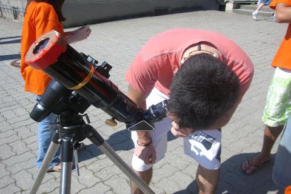
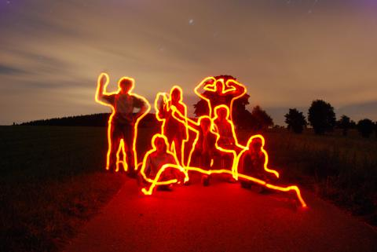

First Info - IAYC 2016 (24th July - 13th August)
The International Astronomical Youth Camp (IAYC) is a three-week long summer camp aiming to promote knowledge of astronomy and related sciences in a unique international atmosphere. It is organised by an international team of students and young scientists, all members of IWA e.V.

Nettlecombe Court (Image with kind permission of John Crocker)
More detailed information about the IAYC in general, participants, the daily schedule and obsvering during the IAYC can be found in the About the IAYC section. We recommend all prospective participants read this section as well as the First Info carefully!
About the IAYC 2016
The IAYC 2016 will be taking place in the UK for the first time. It will be at Nettlecombe Court, a 16th century manor house located in the Exmoor National Park, Somerset. This area was also named the first International Dark Sky site in Europe! Somerset is located in the South of the country and the house is very close to the coast.
Nettlecombe Court serves as the Leonard Wills Field Centre, as a part of the Field Studies Council. There are 15 dormitory rooms and four well-equipped teaching rooms. In addition, there is a student common room which has a pool table, a piano, arcade games, and table football. There is also plenty of space outside for games and activities, an observation field, as well as a stream, woodlands, grasslands, and a river only a short walk away.
A virtual tour of the house is available here.


Nettlecombe Court is nestled in the beautiful rolling hills of Exmoor. (Image by Mark Robinson CC Licensed).
Address:
Nettlecombe Court,
Williton,
Taunton,
TA4 4HT
England
Coodinates:
- Latitude: 51° 7’ 51.6” N
- Longitude: 3° 21’ 0” W
Altitude: ~ 100 m


The nearest small town is Williton (3 miles/5 km) and the largest nearby town is Taunton (16 miles/26 km) where there is a train and a bus station. The nearest cities include Bristol (55 miles/90 km) and London (167 miles/270 km).
For more information, you can explore the map above or contact info@iayc.org.
A few facts about the United Kingdom
Area: 130 395 km²
Population: ~ 64 Million (2013)
Capital: London
Bigger cities: Birmingham, Leeds, Glasgow
Official Language: English
Currency: Pound (GBP) £
International Dialling Code: +44
Travelling in Europe in general (and in England in particular) is very safe. You should have no problem finding English speakers!
Observing
Nettlecombe Court is located in an area of very little light pollution. These conditions will be ideal for observing, which takes place during working group time as part of your project, or outside after midnight meal when the telescopes are available for everyone. Catch a glimpse of a celestial object through a telescope or lie down in your sleeping bag and enjoy the view.

_Participants in 2015 visit the Karl Schwarzchild Observatory near Jena, Germany*It’s not a problem if you don’t have any experience observing, the leaders and other participants are always happy to help. It doesn’t matter if it’s about constellations, how to use a telescope or how to take astro-pictures. At the beginning of the camp we will offer a telescope introduction to help you get a feel for the basics of how to use a telescope on your own.


Furthermore, there’ll be a photographic darkroom available. This means that you can take black and white (film) photos and develop them yourself. You are also welcome to bring your own telescope or binoculars. We will have available several telescopes and CCD cameras suitable for observing and the taking of astro-pictures.
For further information, contact josh@iayc.org or kieran@iayc.org. You can also check out the equipment page.
Participation
The participation fee for timely applications is 690 EUR. This applies to applications sent before the 10th of April 2016.
The post stamp date counts! Later applications will be considered if places are still available, with an increased fee of 750 EUR. Timely applicants will be notified about the outcome of their application at the end of April. If accepted, you will need to transfer the applicable participation fee within 7 days of receiving the acceptance e-mail.
If financial reasons keep you from applying, then we encourage you to seek support from our limited grant programme. Write to info@iayc.org to obtain a grant application form. Grant applications will only be accepted together with the normal application form (i.e. you cannot apply for a grant after you have already been accepted to attend the camp).
The deadline for sending in a grant application is the 27th of March 2016 (post stamp date counts). There will be a short 10 minute Skype interview for those who apply for a grant.
Choosing your working group
In the following section you can find the abstracts of the 8 working groups offered at the IAYC 2016. On the application form you will need to indicate which working group you want to participate in. In addition to the working group overviews the Non-Astronomical Programme leader and the General Coordinator will also introduce themselves.
NEXUS – Numberless Exoplanets and eXtraterrestrials in the UniverSe
Tags: exoplanets, data analysis, theoretical physics
As of today we have already confirmed the existence of about 2000 of them, at least 5000 very promising candidates are waiting in line and there might be hundreds of billions of them just in our own Milky Way. Exoplanets.
How do those countless worlds form and what are they like? How can we detect them and study them in detail? Most importantly though, how many of those worlds harbour life?
In NEXUS we will try to answer those and many, many other questions that are arguably among the most fascinating and compelling mysteries of modern science. The areas of exoplanetary astronomy and astrobiology will be yours to explore to get a better understanding of our wondrous universe.
Prepare to spend hours talking about the origins of life, Fermi Paradox, worlds made out of diamonds, scientific methods of finding and contacting aliens and discussing whether nuking Mars to make it habitable again is a good idea. There will be both theoretical and practical projects to play around with. Books to read, data to analyse, videos to watch, simulations and games to enjoy!
Whether you are completely new to the area of exoplanets, want to delve deeper into the field, are captivated by the premise of solving the mystery of life, or simply often stand outside and look at the stars wondering if there is anyone looking back, NEXUS will be a perfect fit for you.
“Somewhere, something incredible is waiting to be known”
Cookies, tea and lots of awesome music included.
Mac

Let’s talk about Mac! Originally from Poland, he’s starting his studies in Computer Science in the beautiful city of Glasgow. This being his second year as a leader at the age of 19, he hasn’t missed a camp since 2013 when he started as a participant. But don’t be fooled by his sometimes scary look, he has a great sense of humour and he’ll make you laugh when you least expect it. Amongst his talents we can highlight his guitar playing, his eyebrow raising and his Stephen Hawking impression. It’s almost as hilarious as asking him to put on a specific facial expression! He can be a bit shy in the beginning, but that shouldn’t stop you from talking to him since you can earn a really good friend for life.
2016: An IAYC Odyssey
Tags: science-fiction, theoretical physics, conceptual physics
Dear Sci-Fi lovers, I have an offer that you simply cannot refuse!
Did you see the latest movie about the legendary adventures of that guy in Space? Afterwards, did you spend hours discussing with your nerdy friends about all the things which were physically wrong? Did you ever wonder if time-travel is feasible under Einstein’s theory of general relativity? Or if quantum mechanics can really account for those inexplicable dualities in the last Super-Duper-Heroes saga?
Then, my friend, this working group is just for you! Science and science-fiction have always been closely related. The latter pushes science to its limits, and can often predict inventions and theories decades before science has even had a chance. Take novels written by Jules Verne or Isaac Asimov, for example, which have anticipated many discoveries before their time. There are tons of mysteries in cosmology that have been addressed by science-fiction and sometimes this gives birth to real science works. To mention a recent one, have a look at this paper produced after the famous Interstellar movie. But it does not end just there, science-fiction provides an insight to present astronomical issues, such as space ships and space travel; dramatic problems faced by astronauts; the dynamics and physical conditions on other planets… see for example The Martian, another very recent stimulating movie. And perhaps you have also heard about the physics behind Star Trek!
Science, physics, astronomy, cosmology… all can be studied in the amazing world of science-fiction. It will be our aim to entertain the most fascinating questions in this field from this fantastic perspective! We will push the boundaries of science using our own imagination. We will study the real phenomena scientifically, and compare them to their descriptions in your favourite movies and novels. This idea of approaching science is, nonetheless, not new at all – Professor James Kakalios from the University of Minnesota has successfully done this in his book, The Physics of Superheroes. He made the dull subject of Classical Mechanics far more exciting through studying the boots of Superman and other heroes!
If you want to participate in this IAYC Odyssey, be ready to spend three weeks sailing between the boundaries of what is and what could be real. We will have the most epic of films and novels at hand to guide us, and by the end, you will have unraveled the physics and astrophysics behind them. Time will pass us by as though we had only been reading and watching movies! Of course, I will provide popcorn, tea, cookies and blankets so that our particular space-ship journey will be the coziest ever!
Eli

If you can see a person walking down a hall, always smiling, chatting with people and hugging them, then you have found Eli! Eli is currently completing her Master’s degree at the TU Munich and if all goes well she will be finished by the time the camp starts. At the moment she is focusing her research on improving the light detectors of the “Cryogenic Rare Event Search with Superconducting Thermometers” (CRESST) for the direct detection of dark matter. She really knows her stuff and if you ever fancy a chat about astroparticle physics, she is the girl you want to talk to. Be sure you greet her with a smile and an “Hola Eli!” to get the conversation started! If you are in her group, you are going to have an amazing three weeks!
AARDVARK - Ancient Asterisms, Retrograde Data & Very AstRonomical Kultures
Tags: cultural astronomy, historical astronomy, astrometry
Since ancient times man has gazed up to the sky and looked for patterns to keep track of time or use as a calendar. These patterns have changed over millennia, and the constellations we see today have been known in many different forms and names throughout the ages. It would be handy to have some kind of time travelling device in order to travel back and talk to these people of the old times and listen to the fascinating stories they could tell. Since, sadly we have not invented such a device (if we did it would have to be blue and box-shaped of course ;) ) our primary sources of information are stone arrangements, stories and lore that have been passed on by countless generations.
In Aardvark we are going to look at some of the asterisms that have been devised by different cultures all around the globe (perhaps the cultures of the Inca, Maya or the Aborigines just to name a few) and what we can learn from that, astronomically speaking.
Thinking of ancient cultures and their astronomical heritage we can still examine today, one probably comes to mind in particular: Stonehenge. But there are also many other similar structures with astronomical background. Some of them face the Sun or the Moon, others point towards celestial objects like bright stars or planets. We are going to compare some of these structures and look at the criteria that tell us if they really might be oriented with respect to the skies or if the apparent orientation is just coincidental.
Not only will we go back to ancient times, but there will also be some projects concerned with more recent astronomers, who have shaped our understanding of astronomy, and their work. If you want to find out which astronomers I am talking about, either be part of Aardvark or swing by our group for a chat at some point during the camp!
There will be lots of data to sort through and analyse while eating cookies and drinking tea (we are going to be in Britain after all ;) ) and of course observing sessions during clear nights for finding constellations and maybe even devising your own. Looking forward to seeing you all in Nettlecombe Court!
Klaus

Klaus? Klaus is awesome! Originally from Austria, he works at the Planetarium of Vienna. He is about to complete his Masters in Astronomy on “Star Charts and implications for Ethnoastronomy” at the University of Vienna. As you might guess, he loves archeoastronomy! If you spend time with him you’ll be lying under the stars listening to his endless collection of stories about the astronomy of ancient civilizations; the awe is never ending. Klaus has been coming to the IAYC since 2010 and has been a leader since 2013. But Klausi is much more than this, he is the good friend who never ceases to surprise you with his intelligence, tenderness, charm, and his infinite attributes. And his dark side is even better; all the time he is day-dreaming in his own particular Tardis. So if you happen to be on board with him in AARDVARK, the good humour and cozy environment is going to be assured!
ARES - AstrophotogRaphy and sciEntific studieS
Tags: astrophotography, data analysis, experimental
Some could think the time machine has never been invented but I think most of us have one: a camera. You only need to point your camera to the night sky and you will capture photons that have been travelling for thousands or even millions of years. When you look at Andromeda’s galaxy you are looking at something that happened before the first human walked on Earth.
What could we do with those captured photons? You will discover it in ARES: during the night we will make pictures capable of thrilling everyone with their beauty. Colorful stars, wonderful nebulae, distant galaxies… But why do we have to stop there? We will go much further. What about analysing those pictures? We will turn them into science, discovering the composition of the stars and nebulae or trying to figure out the age of star clusters.
We will learn how telescopes work, how digital cameras are capable of producing images and how to discover the mysteries of the universe by processing those images with your computer. Whatever you decide to do, remember you will spend nights capturing those awesome photons and watching the stars with other astronomers. I will keep an eye on you, so cookies, coffee and cool music will never be missing. See you all in Nettlecombe Court,
Alex

Have you ever bought yourself a €1500 equatorial mount and thought, “It looks great, but it’d be better in tiny pieces on my living room floor.” No? Well neither have I, but this Spaniard has, and to top it all off, he put it back together again and it worked even better afterwards! Maybe dismantling telescope mounts isn’t your thing, but I’m sure you’ll still find something in common. Perhaps being a physics student? Or maybe president of your local astronomy club or even being a self-proclaimed god at astrophotography? So whether he’s serving baked goods to his local community (no bun intended) or capturing photons emitted millions of years ago taken on his DSLR chip from his back yard, he always has a story to tell. And don’t forget to ask to see his astronomical pictures, you will genuinely be blown away. You’ll be in safe hands with this astrophysics / astrophotographic walking encyclopedia.
ATLAS - Automated Telescopes, Light and Sensors
Tags: practical, making, observing, robotics, programming
“If you don’t know, the thing to do is not to get scared, but to learn.” ― Ayn Rand, Atlas Shrugged
I admit it, as much as I love the outdoors, sometimes I would much rather be inside on a cold night. Nowadays professional observations are often performed remotely. Either you ask someone else (on a mountain) to take your data or you use a robotic telescope that you control over the internet. ATLAS will be looking at the second option! Robotic telescopes are awesome, they can observe by themselves all year-round (weather permitting) and they can do tedious work like surveying.
As a group we will take a telescope and turn it into a robot. We will generously provide it with automatic controlled motors, a CCD camera and a cozy dome to live in. We’ll hook this up to a network and hopefully be able to operate it from indoors. Finally, we’ll pick some interesting targets and try to take all of our data automatically. Lots of questions need answering such as: where are we pointing? is that really where we’re pointing? what happens if it starts raining (it’s Britain after all)? how do we compensate for the Earth’s rotation?
Most of the projects will involve writing the control software for a single part of the telescope system. Don’t worry if you’ve never written a program or even held a screwdriver before, I’ll teach you! Building stuff is one of the most rewarding things you can do in life, so let’s get stuck in and build an observatory!
Josh

Josh made his first appearance in IAYC in 2009, and since then, he’s shared his company with us on every camp. Josh is slowly becoming an IAYC dinosaur, returning for the 8th time, and 6th time as a leader. This hobbity little Englishman is one of the IAYC’s most prized possessions. Soon-to-be-Dr Josh is currently a PhD student at the UCL Mullard Space Lab, where he works on 3D imaging and rovers. Be it night or day, Josh always has his face hidden behind some sort of light capturing device, be it a DSLR camera or a telescope. A bit laid-back and with a particular sense of humour, you’ll see he creates a unique and charming atmosphere. Josh knows a great deal about physics, astronomy, cameras, and computers, so grab a tea or coffee, sit down with Josh and enjoy the information overload.
DOG - Dan's Observing Group
Tags: astrophotography, observations, practical
Talk to any astronomer these days and they’ll probably brag about how big their telescope is or how small their diffraction limited angular resolution is. Why do astronomers care about their telescopes so much? Mainly because it’s the tool used to detect one of the few things we can actually measure from space: light! Astrophysics is a weird science; it’s probably the only one where you can’t touch your experiments, you can only watch. It’s not like you can just go and stick a thermometer in the sun (speaking from experience here, I couldn’t reach no matter how hard I tried). All you can do is observe your experiment from afar, and with only photons hitting your detector, as an astrophysicist there is so much to learn.
So, now that I’ve explained to you why telescopes are so important to astrophysics, let me introduce the working group. Here, we will not be using telescopes (yes, you read that right, we won’t be using telescopes). Everyone’s using telescopes these days, from those guys at MIT to the kid down the street. It can get pretty boring after a while, which is why we will explore the cosmos with anything but.
We are going to make observations of our local universe just like they did back in the old days, before they had the fancy equipment that we can get our hands on today. This will involve some thinking too; maybe you’ll be calculating the lifetime of the sun with pen, paper and a tin can at your disposal, or proving that the simplest way to see what happens at the end of the universe would be to throw yourself into a black hole through the power of thought (and your choice of beverage) alone. Curious as to how you can do all this without a telescope? Then join DOG for a tail wagging time you won’t forget.
See you there!
Dan

This smart and handsome guy is Dan, a 20-year-old Englishman with a great adventurous spirit. This spirit (and maple syrup) has led him to Montreal for a year to continue his studies in Physics and Astronomy. Dan is seizing his time in Canada and travelling extensively! Ottawa, Boston, New York, Toronto… Not even the Doctor could have done that! Dan has also created the astronomy society at the University of Leeds and was also President! He’s coming back for his 4th camp, 2nd one as a leader. And he’s a great one! Dan’s always willing to help and never gives up (just ask him about the IAYC Olympics). In his working group, you will find a very comfortable environment because he’s always looking at the bright side of things with his wonderful sense of humour.
EPICAS – Easy ProgrammIng, Computation and AStronomical Simulations
Tags: programming, theoretical, simulations
♫ Each new discovery that we acclaim brings us much closer to reach our aim. So we will finally see all of the universe, exists by being observed, expanding every day. As we reach further, let’s take this chance to carry on. We will unravel mysteries! And take the challenge as it comes. We will exceed our boundaries! When will look around and see, we will affect the energy. When we observe by any means, we will create reality. We will not find if we don’t seek, we will not know if we don’t peek. We cannot do if we don’t be, facing our deadlock now. This is our quantum enigma! ♪
Who said programming is boring? Who said it is too complicated? Is it even useful for astronomy? It turns out it is! It’s one of the most useful and powerful tools we have! Astrophysicists use many different programming languages for multiple purposes. They can be used for things as simple as easy calculations to complicated model simulations. These simulations help us understand the Universe around us and prove the validity of our theories, for example.
If you always wanted to learn how to program but you were always too afraid to do so, this is definitely your Working Group! I will provide you with all the tools necessary to learn step by step the easiest program language used in the astronomy world: Python. If you already know how to program but you would like to learn more, or try some cool simulations, then this is your Working Group too! We could try to simulate the formation of stars in a galaxy, gravitational lenses, galaxy collisions, the differential rotation of sunspots, the transit of an exoplanet… You are always welcome to come up with your own ideas too! And don’t forget I’ll be there to help you anytime you struggle, also for moral support and to provide you with cookies, crisps and obviously: tea.
See you in Nettlecombe Court!
♪ The reason we stand facing the rising Sun the pain goes on and on. We hold deep inside the power to guide us until we touch the sky. The reason we stand with pride is the will to live and to reach for the stars. So never look back and we’ll keep on fighting until we touch the sky. ♫
Irati

Hailing from the mysterious Basque country and studying astrophysics in the always-sunny Tenerife, Irati has been to every camp since 2008! Now that’s what you call experience. Whether you want to talk for hours about the Game of Thrones, get your knowledge about solar physics straight or just bang your head to some awesome metal tunes, look no further. If you are lucky enough to find yourself in her working group expect tons and tons of laughter, smiles, awesome music, cookies and generally, high quality time. Be sure to ask her about previous camps and prepare for one hell of a story!
Team Rocket
Tags: rockets, experimental, practical, data analysis
As the old saying goes - “Team Rocket, blast off at the speed of light. Surrender now or prepare to fight!”. Here at Team Rocket that’s exactly what we’ll be doing. Attempting to blast off at (some tiny fraction of) the speed of light. And when that doesn’t work, we won’t surrender, we’ll fight with our creations until they do blast off.
In Team Rocket, as the name suggests, we’ll be going through the A-Z of rockets. Everything from the hands-on part of designing and building your own rockets through to tackling the physics behind the major questions that will arise - for example: How can I make it fly higher and longer? How do I get it to fly straight? Why doesn’t it work? Is this really the best way to make a rocket? My rocket’s broken, how can I fix it? Kieran, why are you running so fast?
Rockets come in all shapes and sizes and it doesn’t matter how much or how little experience you have with building things, we’ll find the right rocket for you. Happy to get wet? I challenge you to design and launch a multi-stage water rocket! Enthusiastic about chemistry (and have a really big laptop charger?), then why not power your rocket with hydrogen and oxygen!? Fancy yourself a bit of a pilot? Try not to crash the drone rocket on the first flight! Or if you’re more the indoors-y type, why not design the next generation of re-usable rockets for taking people to Mars? In Team Rocket anything is possible!
So join me this Summer in Team Rocket and put your physics knowledge to the test. Share with everyone the highs and lows as your rockets soar through the air… or crash spectacularly into a sheep in the paddock next door. One thing is certain though, we’ll enjoy every moment of it!
Kieran

Kieran is the definition of a living IAYC dinosaur, but he’s more like Barney than T-Rex. With 7 camps under his belt (including experience running the show), he knows what’s what. You can always feel safe around Kieran, he’s from a country where everything wants to kill you. He’s a smart fellow, in the middle of his PhD trying to make sure that the European Extremely Large Telescope does what it says it should. Most of all, he’s a thoroughly nice guy who loves to talk about crazy experiments, the Weather?!, and his unfortunate incident with a drop bear. If you want to know about astronomy, Austr(al)ia, and other things beginning with A, he’s your man!
NAP – Non-Astronomical Programme
Non-astronomy in an astronomical camp? Whaaat?! SHAME!!! You might think! Let me give you a quick idea about the NAP before you throw me to the wolves. NAP, in its weird way, will soon turn out to be the only thing standing between your sanity and science/computer-failure/clouds-caused frustrations!
What really is the NAP? When seventy people from all over the world run around in a field making weird sounds or screaming at the top of their voice - that’s NAP. When you learn about different cultures, see traditional dances and taste foreign food - that’s NAP. People listening to poems in dozens of different languages by candlelight - that’s NAP. When the spirit of Benny the 80s LEGO astronaut possesses you and you start constructing a spaceship with some sticky tape and plastic straws - that can also be NAP. This will be the time to forget about your project, to forget about your problems, to forget about everything you know. It’s time to relax: your daily stress relief.
Still not sure what this is all about? Imagine the camp house. If the General is the ruler of the estate, then the NAP is the butler of the house. While the General will make sure that everything runs smoothly and without any problems, I will make sure that you are on time for breakfast, I will provide you with all the necessary material you require for your project (yes, we have sticky tape. No, we don’t have minions to do the project for you), I will be the custodian of all the secrets happening upstairs or downstairs. But I will also try to trigger your wild side, spark the craziness, create some beautiful chaos and induce the glorious fun!
Convinced? Well, luckily for you, you don’t have to apply to this WG because you are already a member of NAP.
See you all when the morning has broken!
Aitor

There are far too many wonderful things to say about Aitor in such a short space, but I shall do my best; he is one of the most amazing Basquian creatures to have ever walked this Earth. This will be Aitor’s third camp as a leader, and his seventh camp in total; he’ll make you feel right at home here at the IAYC. He is currently doing a PhD at the University of Stockholm in all things meteorology (i.e. the stuff that happens in the sky), so if anyone can bring us clear skies, Aitor can. (No pressure.) Apart from attending to the weather, Aitor will have you on the floor laughing in stitches at one moment, to feeling oddly melancholic about the distinct lack of bread the next. But most of all, he is going to bring us 3 weeks of NAP we’re never going to forget! I can’t think of anyone else better qualified; someone who can make forced fun, actually fun. Make sure you practice your running though, this creature is fast on his feet, and we’re going to need all the help we can get if we’re ever going to catch him! Oh and beware, the last thing you want is for him to shame you! 🔔🔔🔔
GEN – General Coordinator
It is my utter delight to welcome you to Downton Abbey Nettlecombe Court, for the first ever IAYC in the UK! As the General Coordinator I have already tended to the mosquitos, and they will not be joining us this year. (You can thank me later.) However, my main role is of much greater importance than this. Vital importance in fact. We’re talking life and death here. Yes, you’ve guessed it. Tea. (And yes, I’m being serious.) Rest assured, for you will be able to sleep at night knowing that there is a cup of beautifully brewed English Breakfast already waiting for you when you arise. There’ll also undoubtedly be some piquant Assam to keep you invigorated and vitalised through the working hours, followed by a delightful Earl Grey to allow for a pleasant, mellow evening of stars a-twinkling and stars a-falling. As long as I am here, you have nothing to fear, there will be tea aplenty!
Most of the time I’ll be invisible. Unfortunately that won’t be because I have superpowers, but rather, I’ll be solving any problems that you might encounter before they’ve even surfaced. I’ll be the one working behind the scenes to make sure that there’s enough food to be eaten, enough hot water to shower in, enough stars to be observed, and enough laundry detergent for your laundry. Generally speaking, the General makes sure that everything goes according to plan. Because everything always goes according to plan. Right? If you would like to test this statement (scientifically, if you please), then I look forward to meeting you and your attempts to refute me.
“I can’t wait, what a pleasure it will be to attend an astronomy camp in the Exmoor International Dark Sky Reserve!”, I hear you say?
“Oh, not at all, the pleasure is all mine.”
Hannah

This independent, young, talented, funny and crazy Scot started as a participant in 2011 and has never missed a camp since then. This year she has the honour of being our General. But don’t be shy to meet her, she may boss you around but once you see her playing during the NAP or dancing at a party you will forget that she is wearing the General hat. Oh WAIT!! That reminds me that she is the true dancing queen of the camp. As I’m writing this, she is finishing her semester in Belgrade as part of the AstroMundus Masters programme. But who knows, maybe when you read these lines she is back home in rainy Scotland, or enjoying the experience of a different country, with new people and new adventures. But whether serious as our General or smiling, Hannah will make sure the camp runs smoothly. She’ll provide tissues and apples, and sort out all the little issues that you don’t even need to know are there.
Your application for the IAYC 2016
If you want to participate in the IAYC 2016, download, print and fill in the application form below and send it to us as soon as possible by email and regular post. If you are not yet 18 (21 in some countries) your legal guardian (usually a parent) has to sign the form as well. Please do not forget to attach a recent picture of yourself.
Make sure you have read the terms and conditions on the application form carefully. Please note that you are obliged to have health insurance, which is valid in England, for the duration of the camp. If we decide to accept your application you will need to send a copy of your insurance certificate to us (e.g. travel insurance certificate, European Health Insurance Card, etc.).
You must be able to attend the entire camp, from the first Sunday evening to the last Saturday morning. We do not make exceptions to this rule. The IAYC experience is not like a summer school or conference with ‘optional’ sessions. The beginning and end of the camp are amongst the most important both for project work/report writing and for bonding with your fellow participants. We want all our participants to enjoy the full camp experience!
Applying
To guarantee that we receive your application, please send a scan of your signed application form by email to info@iayc.org.
To complete your application procedure, please also send the signed application also by regular post to:
IAYC 2016
c/o Kieran Leschinski
Elterleinplatz 1/9A
1170 WIEN
AUSTRIA
Please note that we will only consider applications if we have received a signed paper copy via regular post.
If you apply before the 10th of April 2016 (post stamp date counts), you will be informed about your acceptance at the end of April 2016. Later applications will be considered if places are still available.
If accepted, you will need to transfer the applicable participation fee within 7 days of receiving the acceptance email.
If you need to apply for a VISA to enter England please contact the British embassy or foreign office in your country as soon as possible to find out what documents you will need.
Please make an appointment for your visa application for the end of May, even if your application has not yet been accepted. Organise this ASAP!
Once you have been accepted to the IAYC we will provide a letter of invitation if necessary – please find out what details this letter should contain and contact us at least 2 weeks before your appointment at the embassy! Apart from the letter of invitation, obtaining a visa is your responsibility.
Any questions?
If you have any questions that are not answered by this page, then we have an information service, info@iayc.org, that you can email. This is the same address that you should send your scans to. We will try to answer you within a couple of days - usually it’s sooner!
Before emailing info, please make sure you have read the First Info thoroughly. Please also read the FAQ which answers some of the more common questions that you might have.
Clear skies from all of us at IWA!

